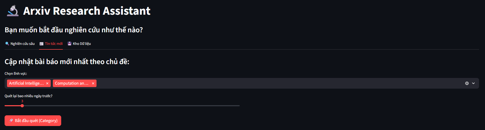
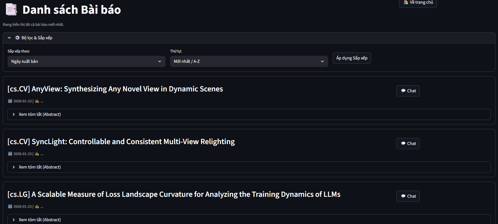

🔬 Arxiv CS Research Agent
An Autonomous AI Agent powered by LangGraph & Google Gemini
Automated Daily News, Deep Paper Analysis, and RAG-based Chat for Computer Science Researchers.
An Autonomous AI Agent powered by LangGraph & Google Gemini
Automated Daily News, Deep Paper Analysis, and RAG-based Chat for Computer Science Researchers.
The Arxiv CS Research Agent is a solution designed to tackle "Information Overload" in the Computer Science research field. Instead of manually scrolling through hundreds of new abstracts on arXiv daily, this system acts as a personal research assistant.
It utilizes a Microservices Architecture to separate concerns between data ingestion (Backend) and user interaction (Frontend). At its core, it leverages LangGraph to orchestrate a ReAct (Reasoning + Acting) Agent capable of deciding when to search the web for general knowledge or download and analyze a full PDF for deep technical details.
The system follows a Polyglot Persistence pattern and is containerized using Docker Compose.
Built with Streamlit. Provides a dual-mode interface: "Daily News" for quick updates and "Research Mode" for deep diving into historical topics using keywords and date filters.
Built with FastAPI. Handles crawling logic, vectorization, and hosts the LangGraph Agent. Manages communication with external APIs (Arxiv, Google Gemini).
cs.CV, cs.AI), Keyword (e.g. "YOLO", "LLM") and
Date Range.
Instead of feeding raw PDFs into the chat context (which consumes massive tokens and introduces noise), the system employs a Pre-processing Agent:
The chat bot is not a simple chain, it's a reasoning engine that selects tools dynamically:
Allows users to search for historical papers using specific keywords (e.g., "YOLO", "Transformers") combined with date filters to retrieve foundational research.

Designed for daily catch-ups. Users can filter new papers by specific arXiv categories (e.g., Computer Vision, AI) updated within the last few days.
Displays fetched papers with advanced sorting (Date/Category). Users can expand abstracts for a quick preview or click "Chat" to start the RAG pipeline.
git clone https://github.com/PhucVt2805/arxiv-research-agent.gitcd arxiv-research-agentCreate a .env file in the root directory:
MONGO_USER=YOUR_USERNAME
MONGO_PASS=YOUR_PASSWORD
VECTOR_SIZE=768
GOOGLE_API_KEY=YOUR_API_KEY
docker-compose up --buildarxiv-cs-research-agent/
├── docker-compose.yml # Service Orchestration
├── .env # Environment Config
├── pyproject.toml # Dependencies (Root)
├── README.md # Project Overview
├── uv.lock # Package Installer Lock
│
├── backend/ # [Microservice] API & Worker
│ ├── pyproject.toml # Dependencies
│ ├── Dockerfile # Multi-stage build
│ └── src/
│ ├── database.py # DB Connections
│ ├── main.py # FastAPI Entrypoint
│ ├── models.py # Beanie ODM Models
│ ├── processor.py # Vector Embeddings
│ ├── crawler/ # Arxiv Scraper
│ ├── utils/ # Log Config
│ └── agent/ # LangGraph Logic
│ ├── graph.py # ReAct Graph Definition
│ ├── tools.py # Search & PDF Tools
│ └── paper_processor.py # Paper Analysis
│
└── frontend/ # [Microservice] User Interface
├── Dockerfile # Multi-stage build
├── pyproject.toml # Dependencies
└── src/
└── main.py # Streamlit Application
Built with ❤️ by a dedicated AI Engineer.
If you find this project useful, please give it a star! ⭐️